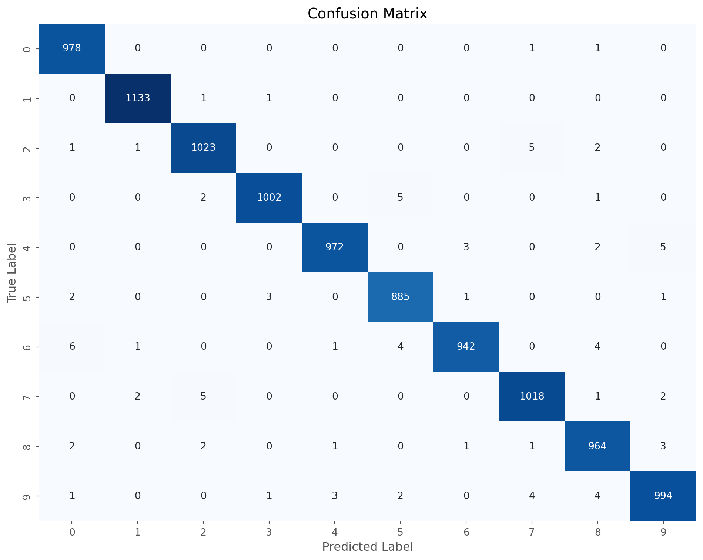
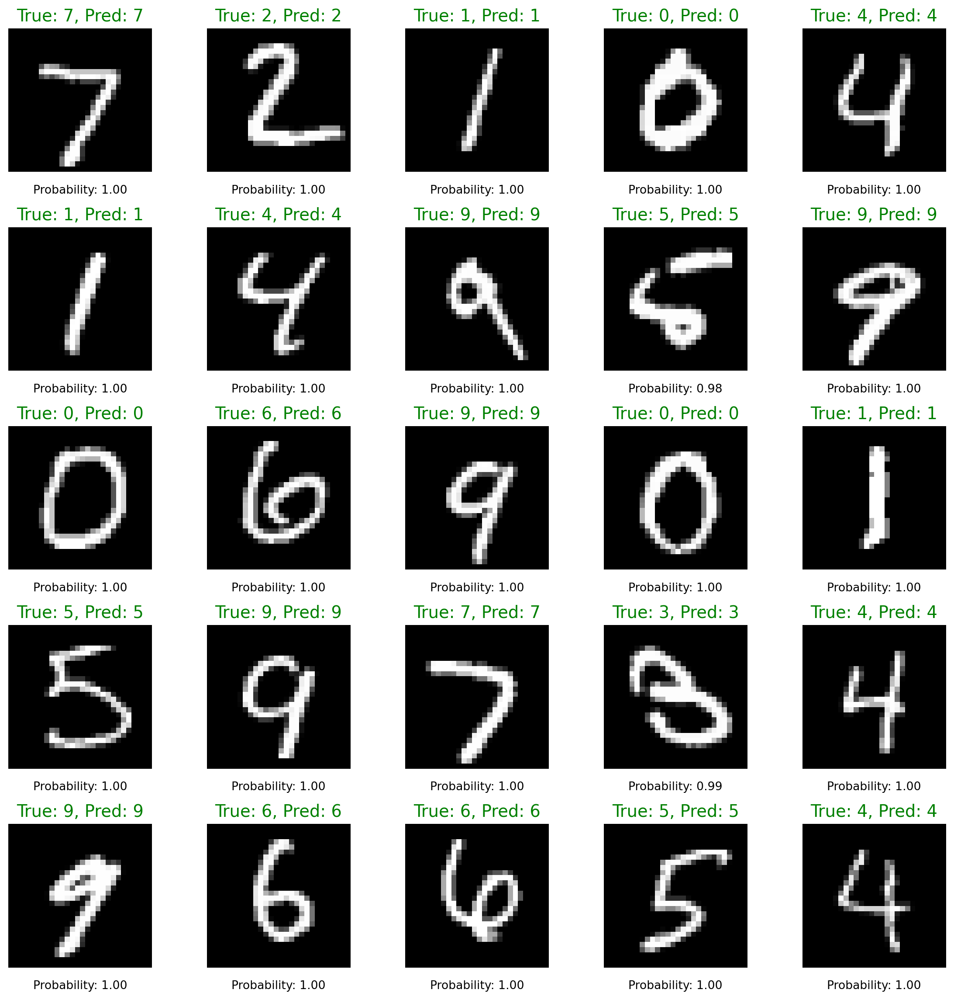

import os
import numpy as np
import matplotlib.pyplot as plt
import torch
import torch.nn as nn
import torch.nn.functional as F
from torchvision import datasets, transforms
import pandas as pd
from sklearn.metrics import confusion_matrix, classification_report
import seaborn as sns
import json
# Set matplotlib style
plt.style.use('ggplot')MNIST Model Analysis
MNIST Model Analysis
In this document, we will analyze the performance and prediction results of trained MNIST classification models.
Loading Necessary Libraries
Define Model Structure
First, we need to define the same model structure used during training.
class Net(nn.Module):
"""CNN model for MNIST classification"""
def __init__(self):
super(Net, self).__init__()
self.conv1 = nn.Conv2d(1, 32, 3, 1) # First convolutional layer: 1 channel in, 32 out, 3x3 kernel
self.conv2 = nn.Conv2d(32, 64, 3, 1) # Second convolutional layer: 32 channels in, 64 out, 3x3 kernel
self.dropout1 = nn.Dropout(0.25) # Dropout layer with 0.25 probability
self.dropout2 = nn.Dropout(0.5) # Dropout layer with 0.5 probability
self.fc1 = nn.Linear(9216, 128) # First fully connected layer
self.fc2 = nn.Linear(128, 10) # Output layer: 10 classes for digits 0-9
def forward(self, x):
"""Forward pass through the network"""
x = self.conv1(x)
x = F.relu(x)
x = self.conv2(x)
x = F.relu(x)
x = F.max_pool2d(x, 2)
x = self.dropout1(x)
x = torch.flatten(x, 1) # Flatten all dimensions except batch
x = self.fc1(x)
x = F.relu(x)
x = self.dropout2(x)
x = self.fc2(x)
output = F.log_softmax(x, dim=1) # Apply log softmax for NLL loss
return outputLoading Data and Model
# Define data transformations
transform = transforms.Compose([
transforms.ToTensor(),
transforms.Normalize((0.1307,), (0.3081,))
])
# Load test dataset
data_dir = '../data'
test_dataset = datasets.MNIST(data_dir, train=False, download=True, transform=transform)
test_loader = torch.utils.data.DataLoader(test_dataset, batch_size=1000)
# Determine available device
device = torch.device("cuda" if torch.cuda.is_available() else
"mps" if torch.backends.mps.is_available() else
"cpu")
print(f"Using device: {device}")
# Try to load the model
try:
# Try multiple possible environments
env_types = ["default", "cpu", "cuda", "mps"]
model_loaded = False
for env_type in env_types:
model_path = f"../models/{env_type}/mnist_cnn.pt"
if os.path.exists(model_path):
# Create model instance
model = Net().to(device)
# Load model weights
model.load_state_dict(torch.load(model_path, map_location=device))
model.eval() # Set to evaluation mode
print(f"✅ Successfully loaded model from {model_path}")
model_loaded = True
break
if not model_loaded:
raise FileNotFoundError("Could not find trained model file")
except Exception as e:
print(f"❌ Error loading model: {str(e)}")
print("Please use 'pixi run train-model' to train the model first")
# Create untrained model for demonstration
model = Net().to(device)
model.eval()Using device: mps
✅ Successfully loaded model from ../models/cpu/mnist_cnn.pt/var/folders/9b/nq3qtb3n0cxgw9m4sy1sycrh0000gn/T/ipykernel_36502/2626477224.py:30: FutureWarning: You are using `torch.load` with `weights_only=False` (the current default value), which uses the default pickle module implicitly. It is possible to construct malicious pickle data which will execute arbitrary code during unpickling (See https://github.com/pytorch/pytorch/blob/main/SECURITY.md#untrusted-models for more details). In a future release, the default value for `weights_only` will be flipped to `True`. This limits the functions that could be executed during unpickling. Arbitrary objects will no longer be allowed to be loaded via this mode unless they are explicitly allowlisted by the user via `torch.serialization.add_safe_globals`. We recommend you start setting `weights_only=True` for any use case where you don't have full control of the loaded file. Please open an issue on GitHub for any issues related to this experimental feature.
model.load_state_dict(torch.load(model_path, map_location=device))Loading Training Results
# Try to load results file
try:
# Try multiple possible environments
env_types = ["default", "cpu", "cuda", "mps"]
results_loaded = False
for env_type in env_types:
results_path = f"../results/{env_type}/mnist_results.json"
if os.path.exists(results_path):
# Load results data
with open(results_path, 'r') as f:
results = json.load(f)
print(f"✅ Successfully loaded results data from {results_path}")
results_loaded = True
break
if not results_loaded:
raise FileNotFoundError("Could not find training results file")
except Exception as e:
print(f"❌ Error loading results: {str(e)}")
print("Please use 'pixi run train-model' and 'pixi run test-model' to generate results")
# Create empty results dictionary for demonstration
results = {"training_history": [], "testing_history": []}✅ Successfully loaded results data from ../results/cpu/mnist_results.jsonModel Performance Analysis
Training History
Analyze the changes in loss and accuracy during the training process.
if 'training_history' in results and len(results['training_history']) > 0:
# Organize training history data
train_data = results['training_history']
# Group by epoch to calculate average loss
epoch_losses = {}
for entry in train_data:
epoch = entry['epoch']
if epoch not in epoch_losses:
epoch_losses[epoch] = []
epoch_losses[epoch].append(entry['loss'])
# Calculate average loss for each epoch
epochs = sorted(epoch_losses.keys())
avg_losses = [np.mean(epoch_losses[e]) for e in epochs]
# Get test history
test_history = results.get('testing_history', [])
test_epochs = [entry['epoch'] for entry in test_history]
test_losses = [entry['loss'] for entry in test_history]
test_accuracies = [entry['accuracy'] for entry in test_history]
# Create figure
fig, (ax1, ax2) = plt.subplots(1, 2, figsize=(16, 6))
# Training loss curve
ax1.plot(epochs, avg_losses, 'o-', color='blue', label='Training Loss')
if test_history:
ax1.plot(test_epochs, test_losses, 's-', color='red', label='Test Loss')
ax1.set_xlabel('Epoch')
ax1.set_ylabel('Loss')
ax1.set_title('Training and Test Loss')
ax1.legend()
ax1.grid(True)
# Test accuracy curve
if test_history:
ax2.plot(test_epochs, test_accuracies, 's-', color='green')
ax2.set_xlabel('Epoch')
ax2.set_ylabel('Accuracy (%)')
ax2.set_title('Test Accuracy')
ax2.grid(True)
else:
ax2.text(0.5, 0.5, 'No test accuracy data available', ha='center', va='center')
plt.tight_layout()
plt.show()
# Display final test results
if 'final_test_result' in results:
final_result = results['final_test_result']
print(f"Final test loss: {final_result['loss']:.4f}")
print(f"Final test accuracy: {final_result['accuracy']:.2f}%")
print(f"Correct predictions: {final_result['correct']}/{final_result['total']}")
else:
print("No training history data available")Final test loss: 0.0276
Final test accuracy: 99.11%
Correct predictions: 9911/10000Confusion Matrix
Calculate and visualize the model’s confusion matrix on the test set.
def evaluate_model(model, data_loader, device):
model.eval()
all_preds = []
all_targets = []
with torch.no_grad():
for data, target in data_loader:
data, target = data.to(device), target.to(device)
output = model(data)
pred = output.argmax(dim=1, keepdim=True).squeeze()
all_preds.extend(pred.cpu().numpy())
all_targets.extend(target.cpu().numpy())
return np.array(all_preds), np.array(all_targets)
# Evaluate model on test set
try:
predictions, targets = evaluate_model(model, test_loader, device)
# Calculate confusion matrix
cm = confusion_matrix(targets, predictions)
# Plot confusion matrix
plt.figure(figsize=(10, 8))
sns.heatmap(cm, annot=True, fmt='d', cmap='Blues', cbar=False,
xticklabels=range(10), yticklabels=range(10))
plt.xlabel('Predicted Label')
plt.ylabel('True Label')
plt.title('Confusion Matrix')
plt.tight_layout()
plt.show()
# Calculate and display classification report
report = classification_report(targets, predictions, output_dict=True)
report_df = pd.DataFrame(report).transpose()
# Filter and rename columns
if 'accuracy' in report_df.index:
accuracy_row = report_df.loc[['accuracy']]
report_df = report_df.drop('accuracy')
report_df = report_df.drop('macro avg', errors='ignore')
report_df = report_df.drop('weighted avg', errors='ignore')
# Display performance for each digit
print("Classification performance by digit:")
print(report_df.round(3))
except Exception as e:
print(f"Error evaluating model: {str(e)}")
Classification performance by digit:
precision recall f1-score support
0 0.988 0.998 0.993 980.0
1 0.996 0.998 0.997 1135.0
2 0.990 0.991 0.991 1032.0
3 0.995 0.992 0.994 1010.0
4 0.995 0.990 0.992 982.0
5 0.988 0.992 0.990 892.0
6 0.995 0.983 0.989 958.0
7 0.989 0.990 0.990 1028.0
8 0.985 0.990 0.987 974.0
9 0.989 0.985 0.987 1009.0Prediction Visualization
View prediction results on some test samples.
def visualize_predictions(model, dataset, device, num_samples=25):
# Create data loader
loader = torch.utils.data.DataLoader(dataset, batch_size=num_samples)
# Get a batch of data
data, targets = next(iter(loader))
data, targets = data.to(device), targets.to(device)
# Get predictions
model.eval()
with torch.no_grad():
outputs = model(data)
probs = torch.exp(outputs)
preds = outputs.argmax(dim=1)
# Move data back to CPU
images = data.cpu().numpy()
targets = targets.cpu().numpy()
preds = preds.cpu().numpy()
probs = probs.cpu().numpy()
# Create figure
rows, cols = 5, 5
fig, axes = plt.subplots(rows, cols, figsize=(12, 12))
for i, ax in enumerate(axes.flat):
if i < num_samples:
# Display image
img = images[i][0]
ax.imshow(img, cmap='gray')
# Set title
true_label = targets[i]
pred_label = preds[i]
probability = probs[i][pred_label]
title = f"True: {true_label}, Pred: {pred_label}"
color = 'green' if true_label == pred_label else 'red'
ax.set_title(title, color=color)
ax.text(0.5, -0.15, f"Probability: {probability:.2f}",
transform=ax.transAxes, ha='center')
ax.axis('off')
plt.tight_layout()
plt.show()
try:
# Visualize some predictions
visualize_predictions(model, test_dataset, device)
except Exception as e:
print(f"Error visualizing predictions: {str(e)}")
Error Analysis
Analyze which samples the model tends to misclassify.
def analyze_errors(model, dataset, device, num_errors=15):
# Create data loader
loader = torch.utils.data.DataLoader(dataset, batch_size=1)
# Collect error predictions
errors = []
model.eval()
with torch.no_grad():
for i, (data, target) in enumerate(loader):
if len(errors) >= num_errors:
break
data, target = data.to(device), target.to(device)
output = model(data)
pred = output.argmax(dim=1)
if pred.item() != target.item():
probs = torch.exp(output)
errors.append({
'image': data.cpu().squeeze().numpy(),
'true': target.item(),
'pred': pred.item(),
'probs': probs.cpu().numpy()[0],
'index': i
})
if not errors:
print("No error predictions found")
return
# Create figure
rows, cols = 3, 5
fig, axes = plt.subplots(rows, cols, figsize=(15, 9))
for i, ax in enumerate(axes.flat):
if i < len(errors):
err = errors[i]
# Display image
ax.imshow(err['image'], cmap='gray')
# Set title
title = f"True: {err['true']}, Pred: {err['pred']}"
ax.set_title(title, color='red')
# Display top 3 highest probabilities
top_k = np.argsort(err['probs'])[-3:][::-1]
probs_text = "\n".join([f"{j}: {err['probs'][j]:.2f}" for j in top_k])
ax.text(0.95, 0.05, probs_text,
transform=ax.transAxes, ha='right', va='bottom',
bbox=dict(boxstyle="round,pad=0.3", fc="white", alpha=0.8))
ax.axis('off')
plt.tight_layout()
plt.show()
try:
# Analyze error predictions
analyze_errors(model, test_dataset, device)
except Exception as e:
print(f"Error analyzing errors: {str(e)}")Feature Importance Analysis
Use gradient visualization to analyze which pixels are most important for the model’s decision.
def compute_gradients(model, image, target, device):
# Add gradient tracking to image
image.requires_grad_()
# Forward pass
model.eval()
output = model(image)
# Calculate gradient for target class
model.zero_grad()
one_hot = torch.zeros_like(output)
one_hot[0, target] = 1
output.backward(gradient=one_hot)
# Get gradient
return image.grad.data.abs().cpu().numpy()[0][0]
try:
# Select some samples from test set
samples = [0, 1000, 2000, 3000, 4000]
num_samples = len(samples)
# Create figure
fig, axes = plt.subplots(num_samples, 3, figsize=(12, 4*num_samples))
for i, sample_idx in enumerate(samples):
# Get sample
image, target = test_dataset[sample_idx]
image = image.unsqueeze(0).to(device) # Add batch dimension
# Make prediction
model.eval()
with torch.no_grad():
output = model(image)
pred = output.argmax(dim=1).item()
# Calculate gradient
gradient = compute_gradients(model, image.clone(), target, device)
# Display original image
axes[i, 0].imshow(image.squeeze().cpu().numpy(), cmap='gray')
axes[i, 0].set_title(f'Original (Label: {target})')
axes[i, 0].axis('off')
# Display gradient
axes[i, 1].imshow(gradient, cmap='hot')
axes[i, 1].set_title('Feature Importance Heatmap')
axes[i, 1].axis('off')
# Display overlay
img = image.squeeze().cpu().numpy()
overlay = np.zeros((28, 28, 3))
overlay[:, :, 0] = gradient / gradient.max() # Red channel for gradient
overlay[:, :, 1] = img # Green channel for original image
overlay[:, :, 2] = img # Blue channel for original image
axes[i, 2].imshow(overlay)
axes[i, 2].set_title('Overlay Visualization')
axes[i, 2].axis('off')
plt.tight_layout()
plt.show()
except Exception as e:
print(f"Error computing feature importance: {str(e)}")Clipping input data to the valid range for imshow with RGB data ([0..1] for floats or [0..255] for integers). Got range [-0.4242129623889923..2.821486711502075].
Clipping input data to the valid range for imshow with RGB data ([0..1] for floats or [0..255] for integers). Got range [-0.4242129623889923..2.821486711502075].
Clipping input data to the valid range for imshow with RGB data ([0..1] for floats or [0..255] for integers). Got range [-0.4242129623889923..2.821486711502075].
Clipping input data to the valid range for imshow with RGB data ([0..1] for floats or [0..255] for integers). Got range [-0.4242129623889923..2.821486711502075].
Clipping input data to the valid range for imshow with RGB data ([0..1] for floats or [0..255] for integers). Got range [-0.4242129623889923..2.821486711502075].Summary
From the above analysis, we can draw the following conclusions about the MNIST model:
- The model achieves high classification accuracy, indicating that CNNs are very effective for handwritten digit recognition tasks
- Different digits have varying recognition difficulty, with some digits (like 1 and 0) being easier to recognize, while others (like 5 and 8) may be more challenging
- The confusion matrix shows the most common confusion pairs (e.g., 4 and 9, or 3 and 5)
- Feature importance analysis indicates that the model primarily focuses on structural features of digits, such as strokes and intersections